INTANGIBLE HERITAGE 01
사람에서 사람으로,
이어지는 무형유산
세대를 넘어 전해 온 소리와 몸짓, 손끝의 기술을 지키고 미래로 잇습니다.
자세히 보기123
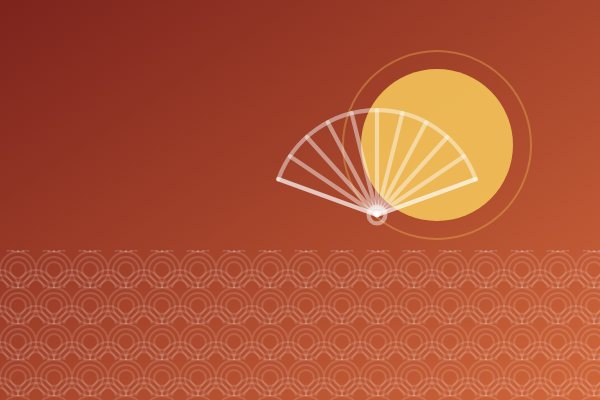
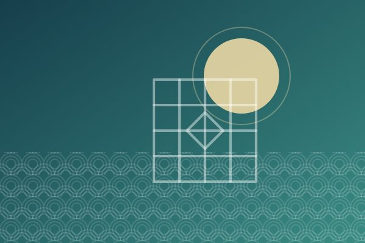
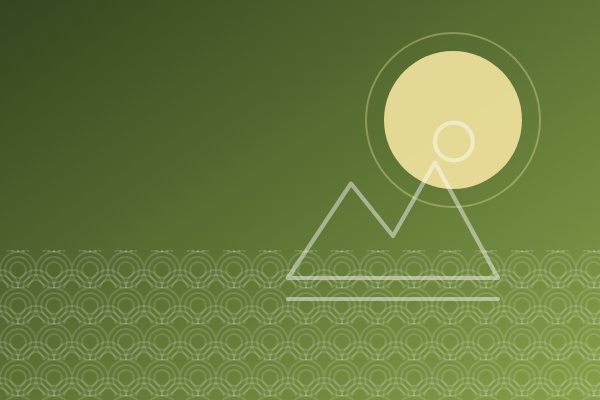
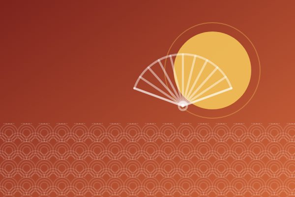
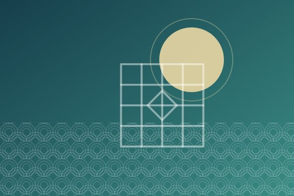
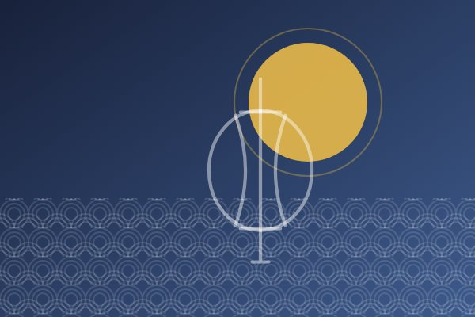
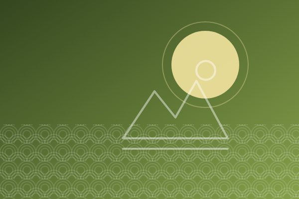
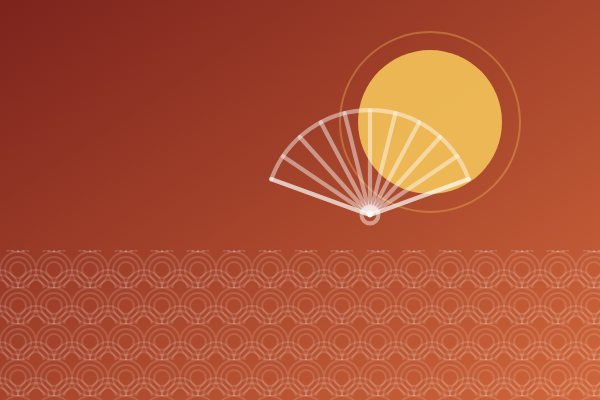
대한민국은 2020년까지 21건의 인류무형문화유산을 등재하였습니다. 연도를 눌러 확인해 보세요.
2001년 등재 · 1건
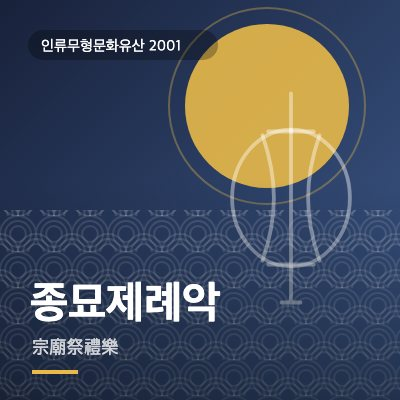
종묘제례 및 종묘제례악조선 왕실의 제사와 그 의식에 쓰인 음악과 춤
2003년 등재 · 1건
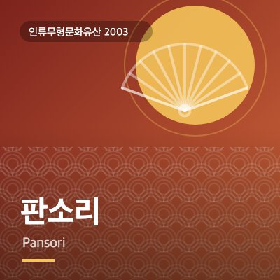
판소리소리꾼과 고수가 함께 엮어 가는 긴 이야기 노래
2005년 등재 · 1건
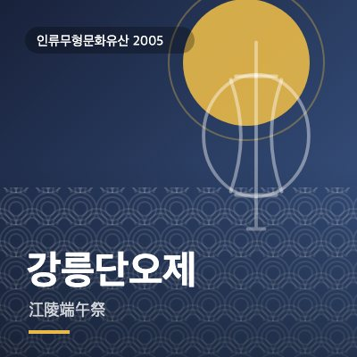
강릉단오제대관령 산신을 모시며 펼치는 강릉의 단오 축제
2009년 등재 · 5건
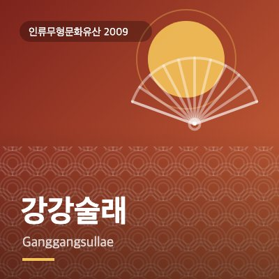
강강술래달 밝은 밤 손을 맞잡고 돌며 부르는 노래
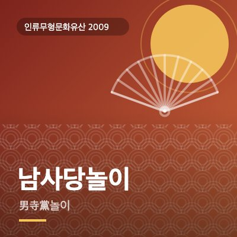
남사당놀이떠돌이 예인들의 여섯 마당 놀이
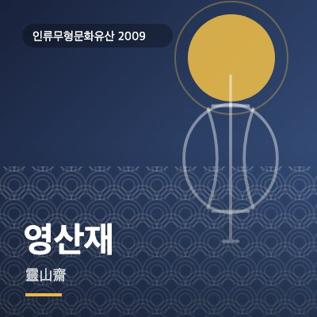
영산재영취산 설법을 재현하는 불교 의식
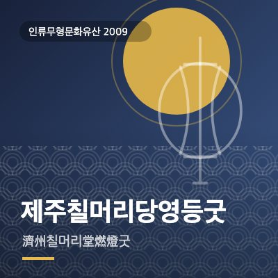
제주칠머리당영등굿바람의 신에게 바다의 안전을 비는 굿
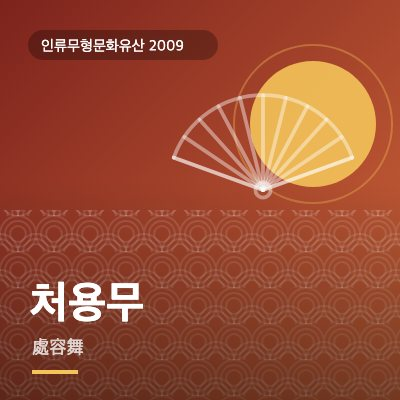
처용무오방색 옷을 입고 추는 궁중무용
2010년 등재 · 3건
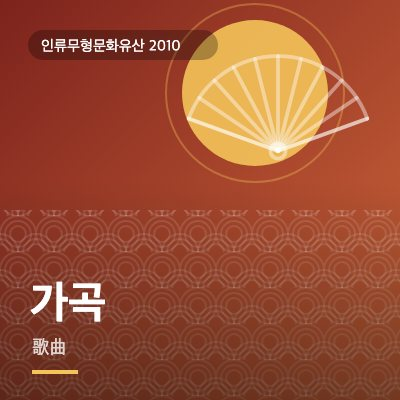
가곡시조시를 관현악 반주에 얹어 부르는 노래
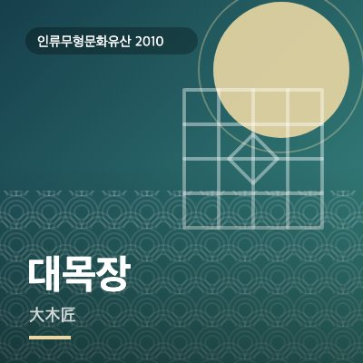
대목장목조 건축물을 짓는 장인의 기술
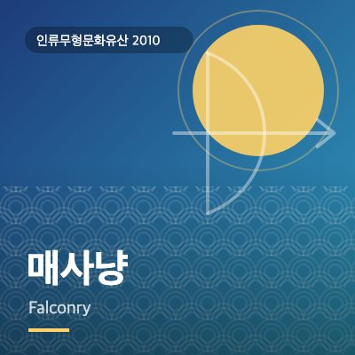
매사냥길들인 매로 사냥하는 전통
2011년 등재 · 3건
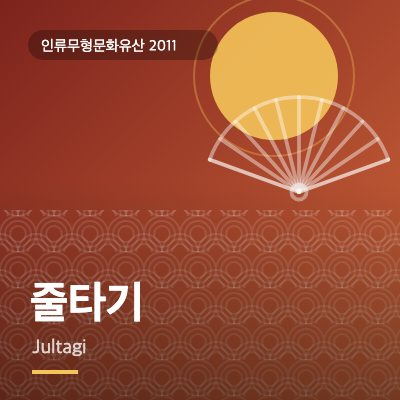
줄타기줄 위에서 재주와 재담을 펼치는 놀이
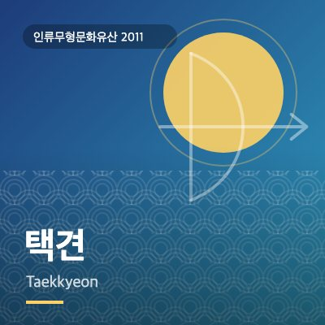
택견부드러운 몸놀림의 우리 무예
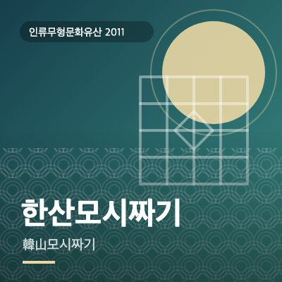
한산모시짜기모시풀로 고운 옷감을 짜는 기술
2012년 등재 · 1건
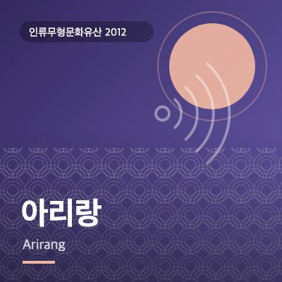
아리랑지역마다 다른 가락으로 이어지는 노래
2013년 등재 · 1건
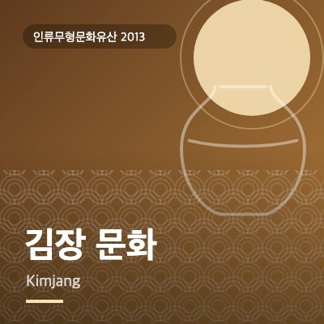
김장, 김치를 담그고 나누는 문화이웃과 함께 김치를 담그고 나누는 풍습
2014년 등재 · 1건
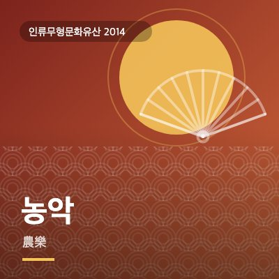
농악타악기를 치며 행진하고 춤추는 공동체 음악
2015년 등재 · 1건
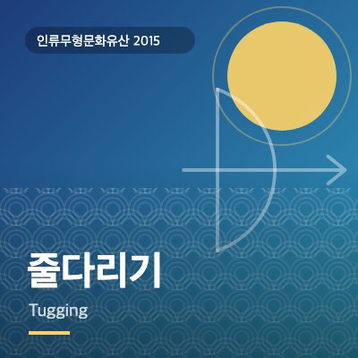
줄다리기마을 사람들이 함께 줄을 당기는 놀이
2016년 등재 · 1건
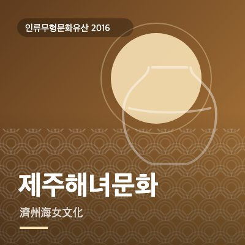
제주해녀문화바다에서 물질하는 해녀의 기술과 공동체
2018년 등재 · 1건
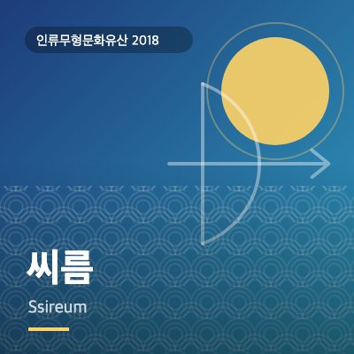
씨름, 한국의 전통 레슬링샅바를 잡고 힘과 기술을 겨루는 놀이
2020년 등재 · 1건
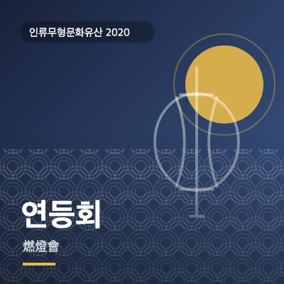
연등회, 한국의 등불 축제등불을 밝혀 세상을 비추는 행사